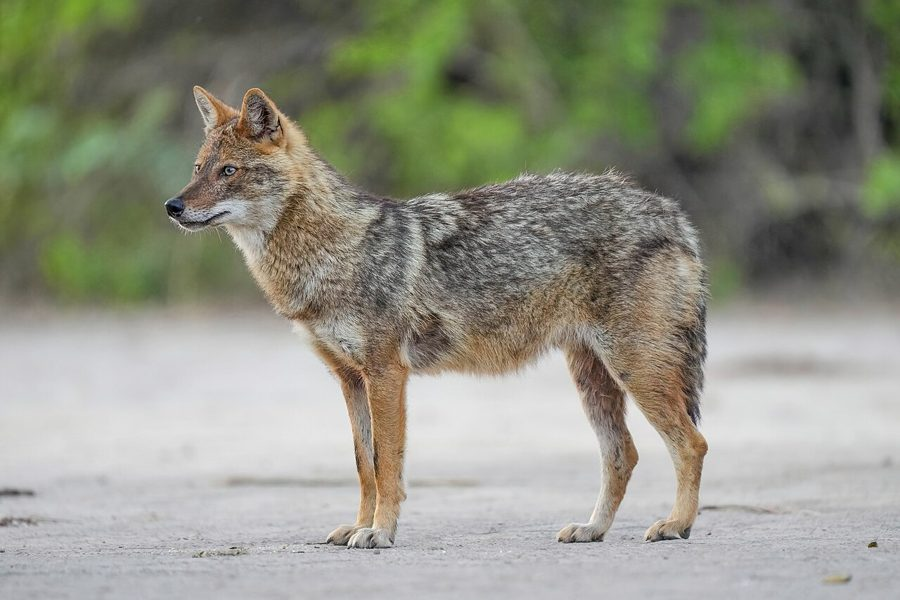

सियारGolden Jackal
Canis aureus · Canidae · MAM-0005

- Scientific name
- Canis aureus Linnaeus, 1758
- Family
- Canidae
- Hindi
- सियार / गीदड़
- Status here
- native
- IUCN
- LC
When to look कब देखें
Present all year.
सियार / Golden Jackal
Canis aureus Linnaeus, 1758 — Canidae
सियार — वह जानवर जो हम देखते कम हैं, पर सुनते ज़्यादा हैं। सूरज ढलते ही, जब खेत सुनसान हो जाते हैं, सियारों की हुआँ-हुआँ शुरू होती है — एक शुरू करता है, दूसरा जोड़ता है, तीसरा उठाता है। यह मिलकर गाना है, इलाके का ऐलान है, झुंड की पहचान है। पंचतंत्र में सियार को चालाक कहा गया — और सच में वह है भी। एक सर्वभक्षी जो जंगल की सफाई करता है, फल के बीज फैलाता है, और रात के खेतों में अपनी चुप्पी में काम करता है।
Quick Identification त्वरित पहचान
| Feature | Description |
|---|---|
| Size | Body 60–75 cm; tail 20–25 cm; shoulder height ~45 cm; weight 7–12 kg |
| Coat | Tawny-golden yellow on back; pale cream/buff on underparts and face; darker saddle in winter |
| Face | Pointed muzzle; erect ears; amber-yellow eyes — dog-like but more angular |
| Tail | Bushy, dark-tipped; carried low while running |
| Track | Oval paw print, 4 toes + claw marks; similar to medium dog but more oval |
| Behaviour | Crepuscular and nocturnal; trotting gait; often seen in pairs or family groups |
Field tip: The size (much smaller than a wolf, similar to a medium dog), the tawny-golden colour, pointed face, and the distinctive haunting howl separate it from all other large mammals in eastern UP. Often mistaken for stray dogs — look for the bushy dark-tipped tail and more angular, wild-looking face.
Morphology आकारिकी
| Feature | Measurement |
|---|---|
| Head-body length | 60–75 cm |
| Tail length | 20–25 cm |
| Shoulder height | ~45 cm |
| Weight | 7–12 kg |
Coat: Double coat. Guard hairs tawny-golden to yellow-brown; undercoat denser and paler. Back has a darker "saddle" of mixed brown and black hairs (more pronounced in winter/cold months). Muzzle, throat, and underparts pale buff-cream. Ears rusty-brown on outside, pale inside. Tail bushy, same colour as back, with distinct dark brown/black tip.
Skull and dentition: Skull elongated, muzzle long. 42 teeth — typical carnivore dentition with well-developed carnassials. Molars less purely shearing than obligate carnivores, reflecting omnivorous diet.
Sexual dimorphism: Males slightly larger than females; no other consistent external difference.
Ecological Role पारिस्थितिक भूमिका
Mesopredator — the middle of the food web: The Golden Jackal occupies the mesopredator niche in eastern UP (below apex predators like leopard/wolf):
Prey (opportunistic):
- Small mammals: rats, mice, bandicoots, hares — significant rodent control
- Ground birds: quails, francolins, ducks; eggs and chicks of ground-nesting birds
- Reptiles: frogs, lizards, snakes
- Insects: grasshoppers, beetles (particularly abundant in monsoon)
- Fruits: berries, Mahua (FLR-0021), figs, fallen mangoes (FLR-0011)
- Carrion and garbage: any dead animal; village garbage
Scavenger — fills the vulture gap: Following the collapse of vulture populations in India (due to diclofenac-contaminated livestock carcasses), jackals (along with Black Kites and feral dogs) have become primary scavengers of large animal carcasses in eastern UP. This prevents disease spread but also increases jackal-human conflict as jackals now scavenge closer to villages.
Seed disperser: Fruits consumed are defecated with intact seeds at considerable distances from parent plants — jackals are legitimate seed dispersers for forest fruits.
Howling chorus and territory: The famous group howl is a complex social signal — advertises territory, coordinates pair/group location, and possibly recruits other jackals to food sources. Pair bonds maintained year-round; pairs howl together (duet).
Life Cycle / Phenology जीवन चक्र
| Month | Event |
|---|---|
| Jan–Feb | Mating season; pairs increasingly seen together; territorial calling intensifies |
| Mar–Apr | Denning — female digs or occupies existing burrow (old termite mound, fox den, drainage pipes); gestation 63 days |
| Apr–May | Pups born — litter of 3–9 pups; both parents provision pups |
| May–Jul | Pups emerge from den; both parents hunt to feed growing pups |
| Aug–Oct | Pups becoming independent; dispersing from parental territory |
| Year-round | Territorial pairs maintain 5–15 sq km home range |
Social structure: Primarily monogamous pairs with stable multi-year pair bonds. Occasionally small family groups (pair + offspring from previous year acting as "helpers"). Not pack hunters — pairs coordinate but do not hunt large prey collaboratively.
Lifespan: 8–10 years in wild; up to 16 years in captivity.
Agricultural / Human Relevance कृषि एवं मानव उपयोग
Crop raiding: Jackals raid watermelon, muskmelon, and maize crops — particularly in June–September when fruit is ripening. This causes minor but locally significant crop losses.
Livestock predation: Jackals occasionally take unguarded young goat kids, lambs, and poultry — particularly near villages bordering scrubland and sugarcane fields.
Rodent control benefit: Studies estimate jackals consume substantial numbers of agricultural rodents annually. In areas where jackals are abundant, rodent crop damage is measurably lower — an unrealised economic benefit of jackal presence.
WPA 1972 — Schedule II (2022 amendment): Prior to 2022, jackals were listed under Schedule V (vermin — could be hunted freely). The 2022 Wildlife Protection Amendment Act reclassified them to Schedule II — now legally protected. This reflects growing recognition of their ecological role after the vulture collapse.
Panchatantra and folklore: The jackal is the protagonist of Panchatantra stories — Damanaka and Karataka are jackals who counsel the lion. The jackal represents cunning, strategy, and opportunism in Indian folklore. Despite this cultural prominence, real jackals are frequently persecuted.
Expected Locally स्थानीय रूप से अपेक्षित
Not a field record. Written from published accounts for eastern Uttar Pradesh. No confirmed local sighting yet — if you have seen it, that is what the atlas needs.
अभी तक स्थानीय पुष्टि नहीं। यह विवरण प्रकाशित स्रोतों से है, किसी अवलोकन से नहीं।
Evening howling choruses are heard from virtually all Basti district villages near scrubland or field margins — a reliable presence indicator. Tracks have been found along Saryu and Rapti river sandbanks — distinctive oval paw prints. The species is seen at dawn trotting along field edges in winter (November–February) during low human activity hours. Poultry raids have been reported from villages bordering sugarcane fields and scrubland in Basti district. A cremation ground near Basti town shows regular jackal scavenging — individuals seen at dawn by early-rising locals.
Distribution वितरण
Global range: One of the most widespread canids in the world — from western and central Africa through the Middle East, Central Asia, and the Indian subcontinent to Southeast Asia. In Europe, it has recently expanded into the Balkans and beyond. The "golden jackal" complex is currently under revision; some authorities split Asian populations as Canis aureus sensu stricto while recognising African populations separately.
In India: Widespread across the country, particularly in agricultural plains, scrubland, and light woodland. Extends from the base of the Himalayas to the tip of peninsular India and into the Andamans. Absent only from true high-altitude and dense rainforest zones.
In Uttar Pradesh: Found throughout the state; particularly common along river corridors, in agricultural-scrub mosaics, and at village margins.
In Basti district / eastern UP: Common and regularly heard year-round. Peak densities along the Saryu and Rapti river margins and in the scrubland-agricultural mosaic of the district.
Research Questions शोध प्रश्न
- What is the diet composition of Golden Jackals in Basti district — and what fraction consists of agricultural rodents vs. wild prey vs. carrion?
- Have jackal sightings near human settlements increased post-vulture collapse (2000s onward) — and does this correlate with increased livestock/poultry raiding incidents?
- What is the home range size and territory overlap of jackal pairs in the fragmented agricultural landscape of eastern UP?
- Is the 2022 Schedule II reclassification resulting in measurably lower persecution of jackals in eastern UP — and do rural communities understand the legal change?
- Do jackals in Basti district use Odontotermes termite mounds (SFL-0001) as den sites — as documented in some other parts of India?
Similar Species मिलती-जुलती प्रजातियाँ
| Species | How to distinguish |
|---|---|
| Stray/feral domestic dog | Highly variable colour; often shorter snout; usually no dark tail tip; less angular face; non-trotting gait |
| Vulpes bengalensis (Indian Fox) | Much smaller (3–4 kg); bushy tail with white tip; more pointed face; very large ears |
| Canis lupus pallipes (Indian Wolf) | Much larger (20–25 kg); longer legs; grey colouring; found in open grasslands; rare in Basti |
Taxonomy & Classification वर्गीकरण
Original description. Canis aureus was described by Carl Linnaeus in 1758 in Systema Naturae, 10th edition, Vol. 1, page 40. Type locality: "Oriente" (the Middle East). The species name aureus is Latin for "golden," referring to the characteristic coat colour. Linnaeus based his description on the golden jackal from Asia Minor.
Subspecies. Several subspecies have been described across the wide range, primarily based on size and fur colour:
| Subspecies | Range |
|---|---|
| C. a. indicus (Hodgson, 1833) | Indian subcontinent including UP |
| C. a. aureus | Asia Minor, Middle East |
| C. a. naria | Sri Lanka |
Family and order placement. Belongs to the order Carnivora, family Canidae (dogs, wolves, foxes, jackals), genus Canis. The family Canidae contains approximately 36 extant species. Canis aureus is classified in the "wolf-like canids" clade along with wolves, coyotes, and African wild dogs. Recent molecular work (Koepfli et al. 2015) confirms the Golden Jackal is more closely related to wolves than to African jackals (Canis mesomelas, C. adustus), which have been placed in the separate genus Lupulella.
Phylogenetic notes. The African and Asian golden jackals were recently separated based on genetics — African golden jackals (C. anthus) are now recognised as a distinct species. The Asian Canis aureus (including Indian populations) is more closely related to wolves and coyotes than to African jackals. This makes the name "jackal" phylogenetically misleading — the Golden Jackal is essentially a small wolf. This has implications for understanding its behaviour (cooperative breeding, pair bonds, territorial howling), all of which are wolf-like rather than fox-like.
IUCN status rationale. Assessed as Least Concern (LC) by the IUCN Red List (Jhala & Moehlman, 2004 assessment). Widespread, adaptable, and tolerant of human modification. In India, legal protection status was strengthened in 2022 from Schedule V (vermin) to Schedule II (Wildlife Protection Act).
Photo Gallery फ़ोटो गैलरी
Atlas Connections संबंधित प्रजातियाँ
- MAM-0002 Indian Mongoose — shares scrubland/field-edge habitat; mongoose diurnal, jackal nocturnal — temporal niche separation
- BRD-0011 Black Kite — shares scavenging role; both expanded as vulture substitute after diclofenac collapse
- SFL-0001 Mound-building Termite — jackal dens documented in abandoned termite mounds in some regions; investigate in Basti district
- REP-0002 Indian Rat Snake — shares prey base (rodents); indirect competitor
References सन्दर्भ
- Linnaeus, C. (1758). Systema Naturae, 10th edition. Laurentii Salvii, Stockholm.
- Jhala, Y.V. & Moehlman, P.D. (2004). Golden Jackal Canis aureus. In: Canids: Foxes, Wolves, Jackals and Dogs. IUCN/SSC Canid Specialist Group.
- Koepfli, K.P. et al. (2015). Genome-wide evidence reveals that African and Eurasian golden jackals are distinct species. Current Biology, 25(16): 2158–2165.
- Aiyadurai, A. & Jhala, Y.V. (2006). Foraging and habitat use by golden jackals in the Bhal region, Gujarat. Journal of the Bombay Natural History Society, 103(1): 5–12.
- Zoological Survey of India. Fauna of Uttar Pradesh — Mammalia. ZSI, Kolkata.
- GBIF Occurrence Data — Canis aureus, India (2026). GBIF taxon key: 5219219.
Source file: species/fauna/mammals/golden_jackal.md